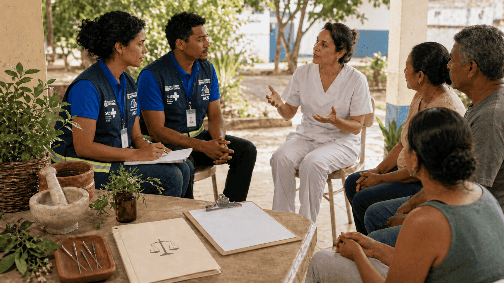
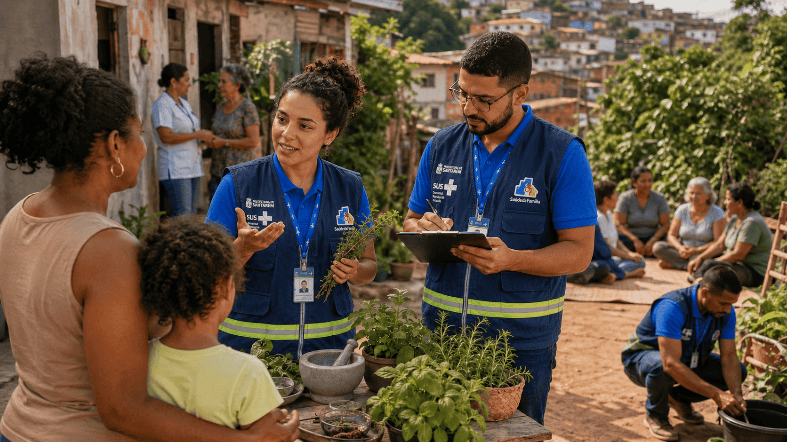
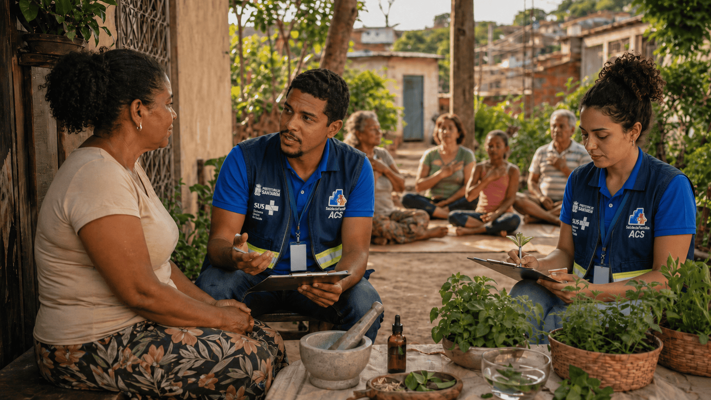
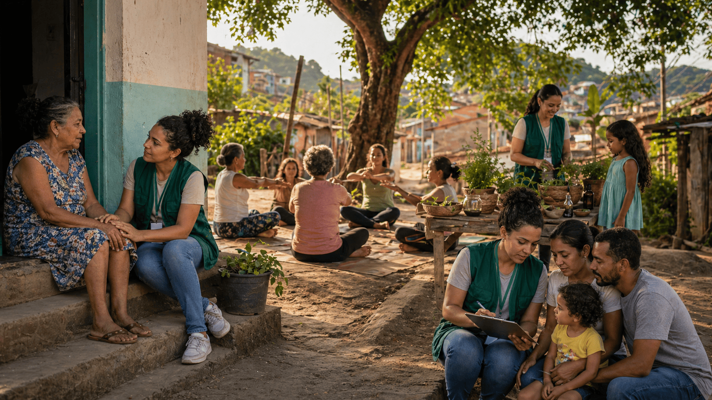

Dialogando com a Prática
Os fóruns foram pensados como espaços de diálogo, escuta e troca entre os participantes do módulo. Compartilhe experiências, tire dúvidas, reflita sobre os conteúdos estudados e dialogue com outros alunos sobre a aplicação das PICS na prática cotidiana.
Acessar fórumUnidades do Módulo
Este módulo foi organizado em cinco unidades, abordando conceitos, bases legais, práticas integrativas, atuação no território, questões éticas e avaliação final.

Unidade 1Introdução às PICS no SUS: princípios e bases legais
Conheça os fundamentos das PICS, sua organização no SUS e suas bases legais.

Unidade 2Práticas integradas à atuação dos ACS e ACE - Parte I
Explore práticas que dialogam com o cuidado em saúde no território.

Unidade 3Práticas integradas à atuação dos ACS e ACE e questões éticas - Parte II
Aprofunde práticas integrativas e reflita sobre limites, segurança e responsabilidade.

Unidade 4Campo de atuação no território e PICS como estratégia de cuidado integral
Consolide orientações éticas para a atuação segura dos ACS e ACE com as PICS.
Autoavaliação e Avaliação do módulo
Revise os aprendizados e realize a avaliação final do módulo.
Informações sobre o Módulo
Qualificar Agentes Comunitários de Saúde (ACS) e Agentes de Combate às Endemias (ACE) para o uso seguro e responsável das PICS no território. Ao longo do módulo, você irá compreender conceitos, bases legais e aspectos éticos relacionados a práticas como plantas medicinais e fitoterapia, Medicina Tradicional Chinesa, Terapia Comunitária Integrativa (TCI), Yoga, Meditação e Automassagem, contribuindo para a promoção da saúde e o cuidado integral.
Destina-se a ACS, ACE, usuários do SUS e demais interessados. O acesso é livre, sem limite de vagas, com o objetivo de ampliar o conhecimento sobre a temática.
Slides, vídeos, histórias em quadrinhos, leituras complementares e atividades de múltipla escolha.
Você realizará dois questionários: um de avaliação do módulo e outro de autoavaliação, permitindo refletir sobre seu aprendizado e participação.
Para obter o certificado, é necessário: concluir 100% das atividades, responder à avaliação de qualidade do módulo e alcançar, no mínimo, 70% de aproveitamento nas atividades avaliativas.